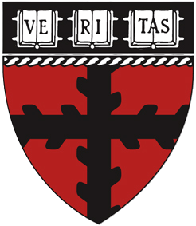
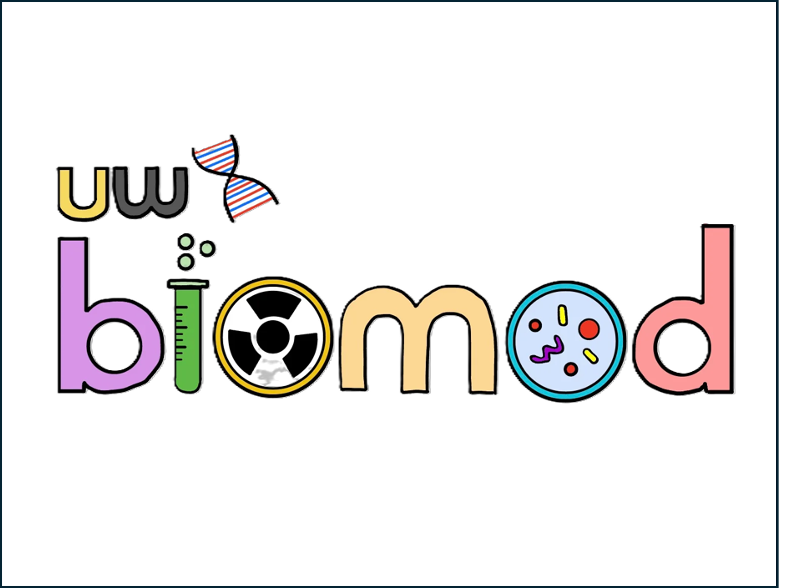

Experiences

Harvard SEAS: Aizenberg Lab
May 2026 – PresentResearch Associate
- Publishing peer-reviewed articles based on prior and ongoing research.
Wyss Institute: Aizenberg Lab
February 2026 – April 2026VOC Sensor Researcher
- Led the development of a cattle methane monitoring system toward a minimum viable product.
- Spearheaded a collaboration with UC Davis for cattle methane field studies.
- Developed physical models of metal oxide semiconductor sensors.
- Initiated research into inertial separation techniques for outdoor e-nose enclosures.
Université de Sherbrooke: INPAQT
September 2025 – December 2025Advanced Packaging Researcher
- Designed a full experimental plan to evaluate temporary bonding techniques and adhesives for Fan-Out Wafer-Level Packaging.
- Performed hands-on microfabrication work inside Class 1 and Class 10 cleanrooms managed by IBM and Teledyne DALSA.
- Collaborated with industrial partners to align process parameters, material specifications, and equipment capabilities.
- Built technical relationships with adhesive and material suppliers.
- Developed detailed process sequences for spin coating, wafer bonding, wafer dicing, shear testing, thermal cycling, chemical exposure testing, vacuum testing, and debonding.
University of Waterloo: SMART Lab
May 2025 – August 2025Polymer Researcher
- Synthesized stress-programmed thiol-acrylate liquid crystal elastomers.
- Developed superparamagnetic enhanced photo-actuated liquid crystal elastomers.
- Functionalized iron oxide nanoparticles with liquid crystal polymer brushes.
- Performed mechanical testing to characterize stress-strain relationships.
Harvard SEAS: Aizenberg Lab
January 2025 – April 2025VOC Sensor Researcher
- Led the development of GRAZE-Tags, methane-sensing ear tags for cattle using e-nose technology.
- Designed and fabricated a custom VOC testing setup.
- Performed COMSOL simulations to validate the VOC sensing setup.
- Conducted Python-based statistical simulations to model cattle belching behaviour and optimize battery life.
- Characterized VOC sensor filter materials using XPS, SEM, EDS, Raman spectroscopy, and FTIR.
- Assisted with data collection and manuscript writing for machine learning research on liquid crystal states.

UW Biomod
May 2024 – November 2024DNA Origami Biosensor Design Leader
- Led the DNA Origami subgroup of the design team.
- Designed a hinging DNA Origami nanostructure using caDNAno for a lupus biosensor.
- Simulated self-assembly using CanDo to validate the design.
University of Waterloo: Ban Lab
June 2024 – August 2024TENG Researcher
- Designed, tested, and simulated a triboelectric nanogenerator using oscilloscopes, preamplifiers, 3D printers, sputtering systems, and COMSOL.
- Trained 20+ convolutional neural networks for a live audio classification system.
- Achieved 92.7% classification accuracy and 0.33 s processing time.
- First co-authored a research paper published in Energy and Environmental Materials.
Third-year BASc student in Nanotechnology Engineering
University of Waterloo
ogibbs@uwaterloo.ca
© 2026 Owen Gibbs